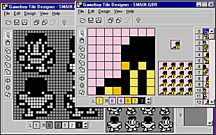
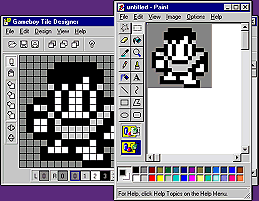
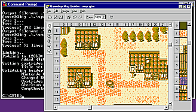

With the Gameboy Tile Designer ("GBTD"), you can draw tiles which you
can incorporate in your own Gameboy productions.
Some of it's features are:

With GBTD, you can design tiles in different sizes, including 8x8, 8x16, 16x16
and 32x32, both in standard Gameboy, as well as colors for the Super Gameboy
and Gameboy Color. Examples can be shown as separate and in a group. Resizing
is easy; simply select a different size from the menu, and GBTD will remap all
tiles. All other tiles are shown and selected visually, making navigating
through your tiles a snap. GBTD also has Flood fill, flipping, scrolling,
rotating and Undo-support, to give your design-time that extra punch you are
looking for.

You can cut and paste tiles in and out of GBTD to other graphical programs,
using the standard clipboard functionality under Windows. This means you can
put any graphic-format you have inside you tiles. Using 'Split Copy and Paste',
you can even import whole images, letting GBTD handle the tedious work of
splitting those images into usable tiles. Next to these methods of importing,
GBTD can import whole tilesets from files created by GBE, and binary files in
various formats.

GBTD exports directly to RGBDS Assembly-source, Objectfile ("RGB1"),
GBDK C-source, TASM Assembly-source, ISAS Assembly-source and flat binary, in a
range of formats; it can also automatically add counters and compress the data,
making conversion programs or editing by hand in most cases unneeded. It even
generates include and header files, which state not only the labels, but also
general info about the exported data. Also, all settings you make are saved for
each individual tileset, so you don't have to remember which settings are
appropriate for which tileset.
GBTD is Freeware !
The Gameboy Tile Designer is Freeware; you are allowed to use it in any way you
want, without paying me anything. You are also allowed (and encouraged) to
distribute this software, as long as you don't receive any payment for it. If
you want to link your home page to GBTD, be sure to link it to this site, not
directly to the downloadable file, as updates will receive different filenames.
Keep in mind that you use this software at your own risk; any damage which might
occur, in whatever form, is your own responsibility.
Installation
GBTD operates under Windows 95, 98 and NT4. GBTD does not have to be installed;
simply download and unzip the package below and start GBTD.EXE. Keep all the
accompanied files in the same directory, and associate .GBR-files to GBTD for
maximum enjoyment. Check out the included README.TXT for more info.
Download
History
| Version | Date | Changes | Reported by |
| 2.2 | 28 August 1999 | Fix:
Palette-paste less prone to errors NO$GMB Filter is now optional (under "Color set") Added various hotkeys | Various Various Dark Fader |
| 2.1 | 6 August 1999 | NO$GMB GBC
color filter (thanks to Martin) Fix: 'Save file?'-dialog popped up too often | Various |
| 2.0 | 24 May 1999 | Auto update!
(see HLP for info) 768 tile-support Palette Copy&Paste fixed (again..) Various minor fixes | Various Various Various |
| 1.9 | 18 April 1999 | Dropdown-list
with palettes ISAS Export format Fix: "Palettes.." more keyboard-friendly Fix: Palette-Copy&Paste didn't copy correctly | Various Micha van der Meer |
| 1.8 | 17 January 1999 | 512
tiles support Export: 'Split' for large tilesets |
|
| 1.7 | 29 November 1998 | Gameboy Color support | |
| 1.6 | 16 August 1998 | Fix:
Color Selector up-arrow fixed Fix: 8x16 showcases work again Color Selector shows SGB palette# as hint Internal overhaul |
Various Mike P Parks |
| 1.5 | 9 August 1998 | Export:
Metatile support. Import: Binary file support. |
Jeff Frohwein A whole bunch.. |
| 1.4 | 2 August 1998 | Palette
entries can now be exported. Copy/Paste for palette colors. Fixed SGB/GB palette behaviour. Cleaned up showcases. |
Neil Roberts |
| 1.3 | 5 July 1998 | Super
Gameboy support. Selection-visibility increased. New export data-format: 'consecutive 4-color'. | |
| 1.2 | 16 May 1998 | Bug fix:
cursor inprecise when drawing constantly. Internal clean-up (a bit faster, a bit less resources, etc). | Randy Robert
Mongenel Jr. |
| 1.1 | 9 May 1998 | Faster
screen-updates. 'Bookmarks' added. Bug fix: Export filename not always shown correctly. Bug fix: RGBDS Obj could not export to bank 0. Cleaned up GBDK C export. Various GUI tweaks. |
Luc van der Borre Luc van der Borre |
| 1.0 | 18 January 1998 | Gameboy color support. INI file enhanced; customizable default settings added. Filename is shown in title. Various GUI glitches fixed. Minor internal optimizations. |
|
| 0.9 | 7 December 1997 | New
feature: 'Split Copy and Paste'; Copy and paste whole images to and from GBTD. Various GUI glitches fixed. | |
| 0.8 | 30 November 1997 | Compression
fixed. Tilesets no longer restricted to 128 tiles. |
Anders Granlund |
| 0.7 | 8 November 1997 | Build-in
GB-Compress support. 'Rotate clockwise' added. Screen-update fixed when opening files. TASM export-remarks fixed. |
Dom |
| 0.6 | 26 October 1997 | 'Flip
colors' added. Partial F1 help-support added. Minor changes/fixes to HLP-file. 'Paste' fixed; it now handles non-default palettes correctly. | |
| 0.5 | 27 june 1997 | UI
rearranged; design tools now have their own toolbar and menu. 'Flood fill' added. 'Undo' added. 'Reopen' added. Display-bug when importing GBE files has been fixed. Smoother handling of display when loading files. | Matt Currie |
| 0.4 | 18 june 1997 | Added Help
File. Interface cleanup: - Pasting now uses the standard CTRL-V. - Arrow-buttons now function as expected. - Better key-handling. |
Stephen Irons Stephen Irons |
| 0.3 | 11 june 1997 | Export for
'TASM' added. 'Clear tiles' added. 'Nibble markers' added. | Guillermo Martorell |
| 0.2 | 1 june 1997 | Export for
'GBDK C' and 'Binary file' added. Direct export via Ctrl-E or menu. Faster startup. Minor bug-fixes. | |
| 0.1 | 25 May 1997 | Initial beta release. |